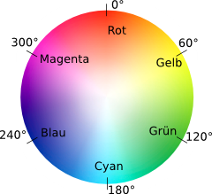

HTML-Elemente einfärben
Für jedes HTML-Element kann per CSS festgelegt werden, welche
Hintergrund-, Rahmen- und Textfarbe es haben soll.
Im folgenden Beispiel wird das
div-Element mit einem grünen
Hintergrund, einem blauen Rahmen und einer roten Textfarbe versehen.
CSS
div {
background-color: green; /* Hintergrundfarbe */
border-color: blue; /* Rahmenfarbe */
color: red; /* Die Anweisung für Textfarbe heisst schlicht "color" */
/* Um den Rahmen sichtbar zu machen, geben wir ihm eine Dicke
von 5 Pixeln und wählen einen Rahmenstil aus. */
border-width: 5px;
border-style: solid;
}
HTML
Dies ist ein Beispiel-Text.
Ausgabe
Farbwerte festlegen
Farben können in CSS auf 4 verschiedene Arten festgelegt werden:
- vorgegebene Namen wie black, white, green etc.
-
Die Funktion
rgb(), mit der die Intensität der Farben Rot, Grün, Blau jeweils als Prozentwert oder mit einem Wert zwischen 0 und 255 angegeben wird. - RGB-Werte in Hexadezimal-Schreibweise, bei der die Intensität der Farben Rot, Grün, Blau jeweils mit einem Wert zwischen 00 und FF angegeben wird. Der Hexadezimalwert FF entspricht dabei dem Dezimalwert 255.
-
Die Funktion
hsl(), mit der der Farbton (hue), die Sättigung (saturation) und die Helligkeit (lightness) festgelegt werden.
Um die Hexadezimal-Schreibweise zu verwenden, müssen die Farbwerte von 0 bis 255 in Hexadezimalwerte umgerechnet werden. Hierfür finden sich viele einfache Werkzeuge im Internet.
Bei der hsl()-Funktion wird der
Farbton als Winkelangabe von 0 bis 360 aus einem Farbkreis bezeichnet,
bei dem Rot oben steht. Dementsprechend ist also die Angabe von 0 ebenso
wie 360 Grad ein Rot.
Das hue-Farbrad mit Grad-Angaben (Quelle: https://wisotop.de/hsv-und-hsl-farbmodell.php): 
Im folgenden Beispiel wird die Farbe Indigo auf diese vier verschiedene Arten festgelegt.
CSS
div.name {
/* Vorgegebener Farbwert "indigo" */
background-color: indigo;
}
div.rgb {
/* Farbwert Rot=75, Grün=0, Blau=130 */
background-color: rgb(75, 0, 130);
}
div.hex {
/* Hexadezimal-Farbwert Rot=4B, Grün=00, Blau=82 */
background-color: #4b0082;
}
div.hsl {
/* Farbwert Ton=275° (Grad Bogenmaß), Sättigung=100%, Helligkeit=25.5% */
background-color: hsl(275, 100%, 25.5%);
}
div {
/* Um die Kästen besser sichtbar zu machen, passen wir den
Innen- und Aussenabstand der div-Elemente an. */
padding: 10px;
margin: 10px;
}
HTML
Ausgabe
Transparenz einstellen
Es ist möglich, die gewünschte Transparenz bei der Farbe anzugeben. Das wird mit den Funktionen rgba() und hsla() erreicht, die die entsprechenden Funktionen rgb() und hsl() um einen Wert für den Alpha-Kanal erweitert. Der Wert muss zwischen 0 (vollkommen transparent) und 1 (vollkommen opak) liegen. Auch für die Hexadezimal-Angabe ist das möglich, hier wird der Wert für die Transparenz einfach als Hexadezimal-Zahl zwischen 00 (transparent) und FF (opak) angefügt. Das folgende Beispiel demonstriert das.
CSS
div.rgb {
/* Farbwert Rot=75, Grün=0, Blau=130, Alpha=0.5 (halbtransparent) */
background-color: rgba(75, 0, 130, 0.5);
}
div.hex {
/* Hexadezimal-Farbwert Rot=4B, Grün=00, Blau=82, Alpha=80 (halbtransparent) */
background-color: #4b008280;
}
div.hsl {
/* Farbwert Ton=275° (Grad Bogenmaß), Sättigung=100%,
Helligkeit=25.5%, Alpha=0.5 (halbtransparent) */
background-color: hsla(275, 100%, 25.5%, 0.5);
}
div {
/* Um die Kästen besser sichtbar zu machen, passen wir den
Innen- und Aussenabstand der div-Elemente an. */
padding: 10px;
margin: 10px;
}
HTML
RGB
HEX
HSL